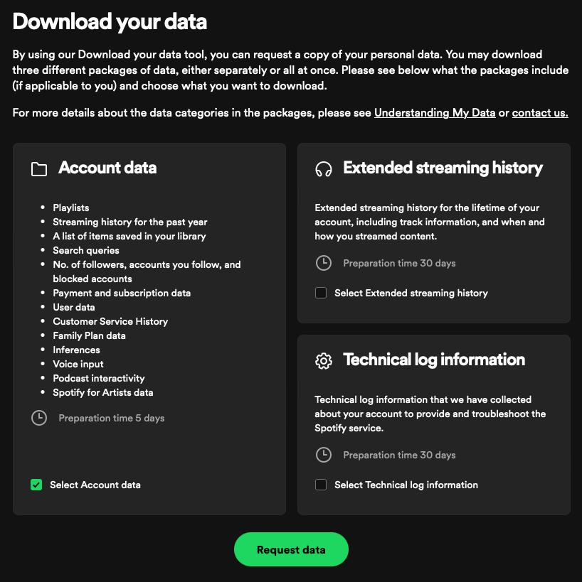
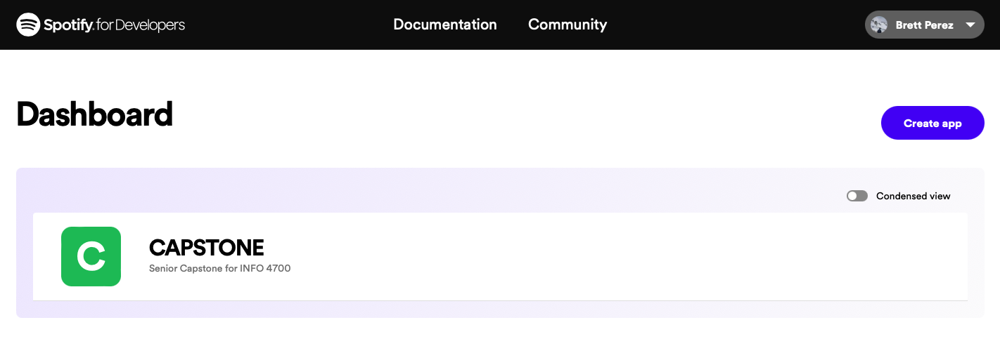
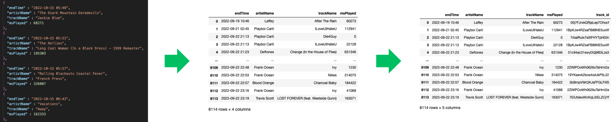
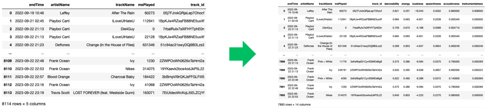

For this project we were trying to answer the question “How does our music taste change throughout the seasons?”. To answer this question we wanted to look at all of our Spotify data over the past year and break it up into the different seasons. Our goal was to analyze this data using tools given to us through Spotify to understand the kind of music we listened to. We used variables such as valence, energy, and danceability to get an understanding of the type of music we listened to in the past year and used them to compare each individual season. After analyzing our data we were able to create a playlist of recommended songs for each season based off of the variables above. In this website you will be able to take a deeper look into each playlist, how we created them, and our overall findings from the project.
Music is a very influential art in most people's lives and can change depending on how they are feeling or the stage of life they are in, leading us to wondering about how it changes throughout the year. The motivation that pushed us to want to pursue this project was that many people use music as an escape and a way to help them through mental health crises. The Jed foundation wrote an article about music that says it can reduce depression and anxiety and help people create a community. They mention that music is especially important for young kids struggling with mental health as “Over half of young adults (18-29) listen to music everyday compared to the 24% of all adults” (Jed Foundation, 2023). They recommend that people who need a break from what they are going through to pick music that has a different storyline from theirs (Cook, 2023). As we continue this project and develop our playlist it will be interesting to see if our music taste changes based on how we might have been feeling at that time. This project will also give us and other people an easy method to go back to a time of year that they are longing for - perhaps in the middle of winter when they need some cheering up from the cold and dreary weather they can pop on their summer playlist and it will brighten their spirits.
This project was built in Jupyter Notebooks using the Pandas and Spotipy python libraries.
Pandas is a popular library used primarily for data manipulation and analysis. It offers powerful data structures like DataFrames and Series, making it easy to handle and analyze large and complex datasets. With functionalities for reading, writing, and manipulating data in various formats such as CSV, Excel, and JSON.
Spotipy is a lightweight Python library that provides a user-friendly way to access the Spotify Web API. It allows developers to interact with the Spotify music catalog and user data, enabling functionalities like searching for songs, artists, and albums, accessing playlists, and managing users' playback and saved tracks. Spotipy simplifies the process of authenticating with Spotify's OAuth 2.0 system, making it a popular choice for creating applications or scripts that integrate with Spotify's vast music-related features and data.
Here you will find instructions, screenshots, and code snippets from our work.
Head to your Spotify account privacy settings
Scroll down and request your account data. Spotify will then email you JSON file(s) that contain every song you have streamed over the past 12 months.
Next head over to Spotify for Developers
Go to your account dashboard and click "Create app" your app will be granted a Client ID and a Client Secret which acts as your API key. Treat this information as a sensitive password!
In this step we will use pandas to read the JSON file that spotify sent us and transform it into a dataframe. However, we are missing one crucial component: the track id associated with each song. Spotify assigns a unique id to every track on their platform. Below is a code snippet that demonstrates how to use Spotify's Web API to generate a list of track ids associated with each song in our dataframe. You can then append that list as a new column to your streaming history.
The track ids that we collected in step 3 will now be used to make additional API calls which gather several data variables associated with each song. Spotify's Web API will handle audio feature requests for 100 songs at a time. Below is a code snippet for splitting a dataframe into chunks of 100 that we will use to make our requests.
Variable explanations
Acousticness - A confidence measure from 0.0 to 1.0 of whether the track is acoustic. 1.0 represents high confidence the track is acoustic.
Danceability - Danceability describes how suitable a track is for dancing based on a combination of musical elements including tempo, rhythm stability, beat strength, and overall regularity. A value of 0.0 is least danceable and 1.0 is most danceable.
Energy - Energy is a measure from 0.0 to 1.0 and represents a perceptual measure of intensity and activity. Typically, energetic tracks feel fast, loud, and noisy. For example, death metal has high energy, while a Bach prelude scores low on the scale. Perceptual features contributing to this attribute include dynamic range, perceived loudness, timbre, onset rate, and general entropy.
Instrumentalness - Predicts whether a track contains no vocals. "Ooh" and "aah" sounds are treated as instrumental in this context. Rap or spoken word tracks are clearly "vocal". The closer the instrumentalness value is to 1.0, the greater likelihood the track contains no vocal content. Values above 0.5 are intended to represent instrumental tracks, but confidence is higher as the value approaches 1.0.
Liveness - Detects the presence of an audience in the recording. Higher liveness values represent an increased probability that the track was performed live. A value above 0.8 provides strong likelihood that the track is live.
Loudness - The overall loudness of a track in decibels (dB). Loudness values are averaged across the entire track and are useful for comparing relative loudness of tracks. Loudness is the quality of a sound that is the primary psychological correlate of physical strength (amplitude). Values typically range between -60 and 0 db.
Speechiness - Speechiness detects the presence of spoken words in a track. The more exclusively speech-like the recording (e.g. talk show, audio book, poetry), the closer to 1.0 the attribute value. Values above 0.66 describe tracks that are probably made entirely of spoken words. Values between 0.33 and 0.66 describe tracks that may contain both music and speech, either in sections or layered, including such cases as rap music. Values below 0.33 most likely represent music and other non-speech-like tracks.
Tempo - The overall estimated tempo of a track in beats per minute (BPM). In musical terminology, tempo is the speed or pace of a given piece and derives directly from the average beat duration.
Valence - A measure from 0.0 to 1.0 describing the musical positiveness conveyed by a track. Tracks with high valence sound more positive (e.g. happy, cheerful, euphoric), while tracks with low valence sound more negative (e.g. sad, depressed, angry).
Now, we have a lot of additional data to describe our streaming history. We can use information such as our top five artists and the min/max/average of each variable from step 4 to generate song recommendations using Spotify's Web API. In the snippet below, Spotify will recommend 50 songs based on our listening habits.
Using the recommendations from step 5, we can now create a Spotify playlist that will appear in your library next time you open the app!